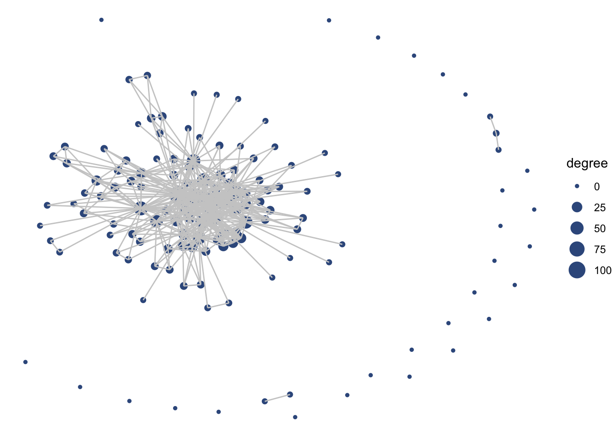

5 One-mode visualization
library(dplyr)##
## Attaching package: 'dplyr'## The following objects are masked from 'package:stats':
##
## filter, lag## The following objects are masked from 'package:base':
##
## intersect, setdiff, setequal, unionlibrary(magrittr)
library(igraph)##
## Attaching package: 'igraph'## The following objects are masked from 'package:dplyr':
##
## as_data_frame, groups, union## The following objects are masked from 'package:stats':
##
## decompose, spectrum## The following object is masked from 'package:base':
##
## unionlibrary(network)##
## 'network' 1.18.1 (2023-01-24), part of the Statnet Project
## * 'news(package="network")' for changes since last version
## * 'citation("network")' for citation information
## * 'https://statnet.org' for help, support, and other information##
## Attaching package: 'network'## The following objects are masked from 'package:igraph':
##
## %c%, %s%, add.edges, add.vertices, delete.edges, delete.vertices,
## get.edge.attribute, get.edges, get.vertex.attribute, is.bipartite,
## is.directed, list.edge.attributes, list.vertex.attributes,
## set.edge.attribute, set.vertex.attributelibrary(sna)## Loading required package: statnet.common##
## Attaching package: 'statnet.common'## The following objects are masked from 'package:base':
##
## attr, order## sna: Tools for Social Network Analysis
## Version 2.7-1 created on 2023-01-24.
## copyright (c) 2005, Carter T. Butts, University of California-Irvine
## For citation information, type citation("sna").
## Type help(package="sna") to get started.##
## Attaching package: 'sna'## The following objects are masked from 'package:igraph':
##
## betweenness, bonpow, closeness, components, degree, dyad.census,
## evcent, hierarchy, is.connected, neighborhood, triad.censuslibrary(ggraph)## Loading required package: ggplot25.1 Introduction
5.1.1 Visualization goals:
- How have different organizations collaborated across projects?
- Do we see any particular research communities emerge across these collaborations? (community detection + representing node attributes by color)
- How have those collaborations changed over time? (make subgraphs based on edge attribute + make multiple plots with fixed coordinates)
5.1.2 Preparing to work with network
We are going to stick to only working with the network package, even though the functions we will use for visualization are compatible with both objects. I propose using network objects because they are compatible with more advanced statistical analysis provided through the statnet suite of packages. igraph objects should also work with the ggraph function, but because the syntax for working with the objects is different, the code used to do that would need to change.
Before we move forward with network, it is worth mentioning that there are commonly-used network functions in each package, igraph and network, that mask one another. For instance:
sna::degree()
igraph::degree()The igraph degree function will work only on igraph objects and sna degree function will work only on network objects. This can create a headache. To avoid confusion and masking in R, we are going to detach the igraph package and work only with network objects and compatible packages like sna.
detach("package:igraph", unload = TRUE)5.2 Getting started with ggraph
To introduce the basics of the ggraph package, we’re going to focus on our first question: What does the collaborative network of Delta science research look like?
As notes in the previous section, ggraph uses the same approach as the ggplot2 grammar of graphics. This means is has three core components: 1. (network) data, 2. geometries, in this case edges and nodes, and 3. aesthetic mappings
ggraph(net1) +
geom_edge_link() +
geom_node_point()## Using "stress" as default layout## Warning: Using the `size` aesthetic in this geom was deprecated in ggplot2 3.4.0.
## ℹ Please use `linewidth` in the `default_aes` field and elsewhere instead.
These are some defaults at play here:
- layout = ‘auto’, which is the ‘stress’ layout
- default aesthetic mapping for geom_edges: x, y, xend, yend
- default aesthetic mapping for geom_node_point: x, y
5.2.1 Layouts
First, let’s talk about layouts. Networks are typically laid out based on the algorithm you (or the package default) chooses. These layouts then are a choice, based on how you would like to present the network. There is an overview of some of the different layouts presented in this blog post, and descriptions of some of them in the ggraph documentation, under the layout_tbl_graph_... functions. Below we present our network with a few different layouts.
ggraph(net1, layout = 'stress', bbox = 20) +
geom_edge_link() +
geom_node_point() +
labs(title = 'Stress (bbox = 20)')
ggraph(net1, layout = 'stress', bbox = 5) +
geom_edge_link() +
geom_node_point() +
labs(title = 'Stress (bbox = 5)')
ggraph(net1, layout = 'kk') +
geom_edge_link() +
geom_node_point() +
labs(title = 'Kamada and Kawai (spring-based algorithm)')
ggraph(net1, layout = 'fr') +
geom_edge_link() +
geom_node_point() +
labs(title = 'Fruchterman and Reingold (force-directed algorithm)')
ggraph(net1, layout = 'tree') +
geom_edge_link() +
geom_node_point()
ggraph(net1, layout = 'circle') +
geom_edge_link() +
geom_node_point()
Note that you can also set a manual layout. Layouts are simply x and y coordinates of points defined by a certain algorithm. You can extract those coordinates using the create_layout() function, and manipulate them, if need be. We will deal with this more in our third question.
fixed_coord <- create_layout(net1, layout = 'fr')
head(fixed_coord[c(1:3,6)])## x y mode
## 1 -9.206455 -1.752206 1
## 2 2.260938 -1.606285 1
## 3 7.042334 6.548832 1
## 4 -3.374176 -2.210867 1
## 5 10.296949 3.420417 1
## 6 -1.715372 7.105168 1
## url
## 1 https://sciencetracker.deltacouncil.ca.gov/node/49590
## 2 https://sciencetracker.deltacouncil.ca.gov/node/49592
## 3 https://sciencetracker.deltacouncil.ca.gov/node/49593
## 4 https://sciencetracker.deltacouncil.ca.gov/node/49594
## 5 https://sciencetracker.deltacouncil.ca.gov/node/49598
## 6 https://sciencetracker.deltacouncil.ca.gov/node/49600For our one-mode networks, we are going to use the ‘fr’ layout, which is the Fruchterman and Reingold (force-directed algorithm). This is a choice that helps place higher-degree nodes in the center, and low-degree and isolate nodes on the periphery.
5.2.2 Aesthetics and themes
Now that we’ve chosen a layout, let’s start adding some aesthetic features. This process will look very much like aesthetic mapping in ggplot2: we can assign aesthetics like color, size, shape, etc. to both our edge and node geometries. We can assign those features from the data directly, or just as stand-alone features.
Size by degree: Let’s first say that we’d like to size our nodes by their degree centrality. While more central nodes are already places at the center of our layout’s algorithm, it can be helpful to also increase their size to communicate this point. To size by degree, we will want to create a degree variable are a node attribute using the degree function.
net1 %v% 'degree' <- sna::degree(net1)Color-blind friendly colors: We’d also like our nodes and edges to be colored differently than the default black, so we can set these colors to our geometries. Because the focus of these networks are on nodes, not edges, we can set our edges to a less pronounced color like grey, and select a color-blind friendly color palette to select a node color from. I personally like to use viridis:
viridis::viridis(12)## [1] "#440154FF" "#482173FF" "#433E85FF" "#38598CFF" "#2D708EFF" "#25858EFF"
## [7] "#1E9B8AFF" "#2BB07FFF" "#51C56AFF" "#85D54AFF" "#C2DF23FF" "#FDE725FF"The latest version of R studio lets us see these colors when we write them out in a script, so let’s do that, and assign these colors to an object named clrs. We will be referencing this vector as we start using the palette.
clrs <- c("#440154FF", "#482173FF", "#433E85FF", "#38598CFF",
"#2D708EFF", "#25858EFF", "#1E9B8AFF", "#2BB07FFF",
"#51C56AFF", "#85D54AFF", "#C2DF23FF", "#FDE725FF")We can now integrate these three features: node size, edge color, and node color, into our plot. Let’s also add an alpha for the edges there.
ggraph(net1, layout = 'fr') +
geom_edge_link(color = "gray70") +
geom_node_point(aes(size = net1 %v% 'degree'), color = clrs[4]) 
We can also add themes and labels, just like with ggplot2. theme_void() is great for networks because it removes any coordinates or background color.
ggraph(net1, layout = 'fr') +
geom_edge_link(color = "gray70", alpha = .5) +
geom_node_point(aes(size = net1 %v% 'degree'), color = clrs[4],
alpha = .7) +
theme_void() +
theme(legend.position = "none") +
labs(title = "Delta Science Collaborative Research Network") Notice it changes every time, a little bit. You can set your seed (every time before you plot to keep it consistent.)
Notice it changes every time, a little bit. You can set your seed (every time before you plot to keep it consistent.)
5.2.3 Node labels
So far we are getting a clear shape of the network. But our main goal is to understand who is central to collaboration. Let’s try to add some node text with geom_node_text().
We have a variable that is the name of our vertices:
head(net1 %v% 'name')## [1] "Agricultural Coalitions: Landowners membership fees"
## [2] "Anchor QEA"
## [3] "Audubon Canyon Ranch"
## [4] "Bachand and Associates"
## [5] "BTS"
## [6] "CalFish"Let’s add this as a text geometry.
ggraph(net1, layout = 'fr') +
geom_edge_link(color = "gray70", alpha = 0.5) +
geom_node_point(aes(size = net1 %v% 'degree'), color = clrs[4],
alpha = .7) +
theme_void() +
theme_void() +
theme(legend.position = "none") +
labs(title = "Delta Science Collaborative Research Network") +
geom_node_text(aes(label = net1 %v% 'name'),
size = 3,
color="black")
Okay, a bit overwhelming. Instead, let’s be selective based on degree. Let’s say we want to take the top 5-degree nodes and label them.
topdeg <- data.frame("deg" = net1 %v% 'degree') %>%
top_n(5)## Selecting by degnet1 %v% 'labels' <- ifelse((net1 %v% 'degree') %in% topdeg$deg,
net1 %v% 'name', '')Now we have a sparse label attribute.
net1 %v% 'labels'## [1] "" "" "" "" "" "" "" "CDFW" ""
## [10] "" "" "" "" "" "DWR" "" "" ""
## [19] "" "" "" "" "" "" "" "" ""
## [28] "" "" "" "" "" "" "" "" ""
## [37] "" "" "" "" "" "" "" "" ""
## [46] "" "" "" "" "" "" "" "" ""
## [55] "" "" "" "" "" "" "" "" ""
## [64] "" "" "" "" "" "" "" "" ""
## [73] "" "" "" "" "" "" "" "" ""
## [82] "" "" "" "" "" "" "" "" ""
## [91] "" "" "" "" "" "" "" "" ""
## [100] "" "" "USBR" "" "" "" "" "" ""
## [109] "" "" "USFWS" "" "USGS" "" "" "" ""
## [118] "" "" "" "" "" "" "" "" ""
## [127] "" "" "" "" "" "" "" "" ""
## [136] "" "" "" ""We can use this labels aesthetic to make our figure more easily readable.
ggraph(net1, layout = 'fr') +
geom_edge_link(color = "gray70", alpha = 0.5) +
geom_node_point(aes(size = net1 %v% 'degree'), color = clrs[4],
alpha = .7) +
theme_void() +
theme(legend.position = "none") +
labs(title = "Delta Science Collaborative Research Network") +
geom_node_text(aes(label = net1 %v% 'labels'),
size = 3,
color="black")
Almost. Let’s include a repel = T argument to make sure the text doesn’t overlap.
ggraph(net1, layout = 'fr') +
geom_edge_link(color = "gray70", alpha = 0.5) +
geom_node_point(aes(size = net1 %v% 'degree'), color = clrs[4],
alpha = .7) +
theme_void() +
theme(legend.position = "none") +
labs(title = "Delta Science Collaborative Research Network") +
geom_node_text(aes(label = net1 %v% 'labels'),
size = 3,
color="black",
repel = T)
Now that we’ve got that down as a base, I want to set this as a function so that we can move through other material a little more smoothly.
netplot_function <- function(netname){
p <- ggraph(netname, layout = 'fr') +
geom_edge_link(color = "gray70", alpha = 0.5) +
geom_node_point(aes(size = netname %v% 'degree'), color = clrs[4],
alpha = .7) +
theme_void() +
theme(legend.position = "none") +
geom_node_text(aes(label = netname %v% 'labels'),
size = 3,
color="black",
repel = T)
return(p)
}5.2.4 Removing isolates
Before we move too far along in our formatting of this figure, we may want to remove isolates. There are certainly occasions where we want to see isolates in our network, but other times we are interested in the main component. We can identify our isolates and then induce our subgraph with only the non-isolate nodes using the get.inducedSubgraph() function.
isolates(net1)## [1] 5 6 10 14 16 18 26 33 37 42 46 50 56 58 69 76 77 79 97
## [20] 106 108 115 117 127 131 134 137noiso <- (1:network.size(net1))[-isolates(net1)]
net1_noiso <- get.inducedSubgraph(net1, noiso)Now we can see our network without isolates.
netplot_function(net1_noiso)
5.3 Community detection
Moving on to a deeper look at the network. Often we’re curious about whether or not there is some pattern within our network. Are some organizations linking with certain others on a more regular basis? Is there a grouping trend in our network that we can’t see without some kind of visual aid? To answer this, we might want to do some community detection approaches.
5.3.1 Community is broadly defined
Broadly, community detection is…
Have there been certain communities of research over time?
While we’ve moved away from igraph, I do want to point out that it has a number of community detection algorithms.
?igraph::cluster_walktrap()
?igraph::cluster_leiden()
?igraph::cluster_optimal()In the sna package there is the equivalence cluster (equiv.cluster) function.
?sna::equiv.clust()5.3.2 Equivalence clusters
Equivalence clustering is a clustering method which groups nodes based on distance from one another. You can specify what kinds of clustering method to use with the cluster.method argument and what distance function to use with equiv.fun, but it by default uses a hierarchical clustering method based on structural equivalence using Hamming distance. We can calculate the distance and plot a dendrogram of the clusters.
ec <- equiv.clust(net1_noiso)
plot(ec)
We can look at the different ‘heights’ of the nodes within the dendrogram, and see how many different levels there are.
length(unique(ec$cluster$height))## [1] 30Now that we have these clusters, we can turn to another method, blockmodelling, which will evaluate blocks of groupings of nodes. We can specify how may blocks we want (k), or specify a height at which to split the classes (h). The block model output is a matrix with density measures (this is the default of the function).
bm <- blockmodel(net1_noiso, ec, k = 30, glabels = "DSC Collaboration")
bm$block.model## Block 1 Block 2 Block 3 Block 4 Block 5 Block 6
## Block 1 0.010628019 0.003623188 0.1521739 0.007246377 0.04347826 0.2173913
## Block 2 0.003623188 0.666666667 0.0000000 0.000000000 0.00000000 0.0000000
## Block 3 0.152173913 0.000000000 NaN 1.000000000 1.00000000 1.0000000
## Block 4 0.007246377 0.000000000 1.0000000 0.666666667 0.66666667 0.6666667
## Block 5 0.043478261 0.000000000 1.0000000 0.666666667 NaN 1.0000000
## Block 6 0.217391304 0.000000000 1.0000000 0.666666667 1.00000000 NaN
## Block 7 0.010869565 0.000000000 1.0000000 0.000000000 0.00000000 1.0000000
## Block 8 0.007246377 0.000000000 0.3333333 0.000000000 0.33333333 0.3333333
## Block 9 0.000000000 0.000000000 1.0000000 0.000000000 0.00000000 0.6666667
## Block 10 0.003623188 0.027777778 0.8333333 0.000000000 0.00000000 0.0000000
## Block 11 0.065217391 0.000000000 1.0000000 0.666666667 1.00000000 1.0000000
## Block 12 0.000000000 0.000000000 0.0000000 0.000000000 0.00000000 0.0000000
## Block 13 0.000000000 0.000000000 0.0000000 0.000000000 0.00000000 0.0000000
## Block 14 0.005434783 0.166666667 1.0000000 0.000000000 0.00000000 0.0000000
## Block 15 0.000000000 0.000000000 0.0000000 0.000000000 0.00000000 0.0000000
## Block 16 0.086956522 0.000000000 1.0000000 0.000000000 0.00000000 1.0000000
## Block 17 0.130434783 0.000000000 1.0000000 0.000000000 1.00000000 1.0000000
## Block 18 0.000000000 0.000000000 1.0000000 0.000000000 0.00000000 1.0000000
## Block 19 0.000000000 0.000000000 0.0000000 0.000000000 1.00000000 0.0000000
## Block 20 0.173913043 0.500000000 1.0000000 0.000000000 0.00000000 1.0000000
## Block 21 0.065217391 0.000000000 0.0000000 0.000000000 1.00000000 1.0000000
## Block 22 0.021739130 0.500000000 1.0000000 0.000000000 0.00000000 1.0000000
## Block 23 0.065217391 0.000000000 1.0000000 0.000000000 0.00000000 1.0000000
## Block 24 0.000000000 0.000000000 0.5000000 0.000000000 0.00000000 0.0000000
## Block 25 0.108695652 0.000000000 1.0000000 0.000000000 0.00000000 1.0000000
## Block 26 0.065217391 0.000000000 1.0000000 0.000000000 1.00000000 0.0000000
## Block 27 0.043478261 0.000000000 1.0000000 0.666666667 0.00000000 1.0000000
## Block 28 0.130434783 0.000000000 1.0000000 0.666666667 0.00000000 1.0000000
## Block 29 0.217391304 0.333333333 1.0000000 0.333333333 0.00000000 1.0000000
## Block 30 0.130434783 0.166666667 1.0000000 0.666666667 1.00000000 1.0000000
## Block 7 Block 8 Block 9 Block 10 Block 11 Block 12
## Block 1 0.01086957 0.007246377 0.0000000 0.003623188 0.06521739 0.0
## Block 2 0.00000000 0.000000000 0.0000000 0.027777778 0.00000000 0.0
## Block 3 1.00000000 0.333333333 1.0000000 0.833333333 1.00000000 0.0
## Block 4 0.00000000 0.000000000 0.0000000 0.000000000 0.66666667 0.0
## Block 5 0.00000000 0.333333333 0.0000000 0.000000000 1.00000000 0.0
## Block 6 1.00000000 0.333333333 0.6666667 0.000000000 1.00000000 0.0
## Block 7 0.50000000 0.000000000 0.0000000 0.000000000 1.00000000 0.0
## Block 8 0.00000000 1.000000000 0.0000000 0.000000000 0.00000000 0.0
## Block 9 0.00000000 0.000000000 0.3333333 0.000000000 0.33333333 0.0
## Block 10 0.00000000 0.000000000 0.0000000 0.466666667 0.33333333 0.0
## Block 11 1.00000000 0.000000000 0.3333333 0.333333333 NaN 0.0
## Block 12 0.00000000 0.000000000 0.0000000 0.000000000 0.00000000 0.8
## Block 13 0.00000000 0.083333333 0.0000000 0.000000000 0.00000000 0.0
## Block 14 0.00000000 0.000000000 0.0000000 0.000000000 0.00000000 0.0
## Block 15 0.00000000 0.000000000 0.0000000 0.000000000 0.00000000 0.0
## Block 16 1.00000000 0.000000000 0.0000000 0.000000000 1.00000000 0.0
## Block 17 0.00000000 0.333333333 0.0000000 0.000000000 1.00000000 0.0
## Block 18 0.00000000 1.000000000 1.0000000 0.000000000 1.00000000 0.0
## Block 19 0.25000000 0.000000000 0.3333333 0.000000000 1.00000000 0.0
## Block 20 0.25000000 0.000000000 0.3333333 0.500000000 1.00000000 0.0
## Block 21 0.25000000 0.000000000 0.0000000 0.000000000 0.00000000 0.0
## Block 22 0.00000000 1.000000000 1.0000000 0.000000000 0.00000000 0.0
## Block 23 1.00000000 0.333333333 1.0000000 0.000000000 1.00000000 0.0
## Block 24 0.00000000 0.000000000 0.0000000 0.000000000 0.00000000 0.0
## Block 25 0.50000000 0.000000000 0.6666667 0.000000000 1.00000000 0.0
## Block 26 0.00000000 0.333333333 0.3333333 0.000000000 0.00000000 0.0
## Block 27 1.00000000 0.000000000 0.0000000 0.000000000 1.00000000 0.0
## Block 28 1.00000000 0.000000000 1.0000000 0.000000000 1.00000000 0.0
## Block 29 0.50000000 1.000000000 1.0000000 0.500000000 1.00000000 0.6
## Block 30 0.00000000 0.000000000 0.0000000 0.000000000 1.00000000 0.6
## Block 13 Block 14 Block 15 Block 16 Block 17 Block 18
## Block 1 0.00000000 0.005434783 0 0.08695652 0.1304348 0.0
## Block 2 0.00000000 0.166666667 0 0.00000000 0.0000000 0.0
## Block 3 0.00000000 1.000000000 0 1.00000000 1.0000000 1.0
## Block 4 0.00000000 0.000000000 0 0.00000000 0.0000000 0.0
## Block 5 0.00000000 0.000000000 0 0.00000000 1.0000000 0.0
## Block 6 0.00000000 0.000000000 0 1.00000000 1.0000000 1.0
## Block 7 0.00000000 0.000000000 0 1.00000000 0.0000000 0.0
## Block 8 0.08333333 0.000000000 0 0.00000000 0.3333333 1.0
## Block 9 0.00000000 0.000000000 0 0.00000000 0.0000000 1.0
## Block 10 0.00000000 0.000000000 0 0.00000000 0.0000000 0.0
## Block 11 0.00000000 0.000000000 0 1.00000000 1.0000000 1.0
## Block 12 0.00000000 0.000000000 0 0.00000000 0.0000000 0.0
## Block 13 0.66666667 0.000000000 0 0.00000000 0.2500000 0.0
## Block 14 0.00000000 1.000000000 0 0.00000000 0.0000000 0.0
## Block 15 0.00000000 0.000000000 1 0.00000000 1.0000000 0.0
## Block 16 0.00000000 0.000000000 0 NaN 0.0000000 0.0
## Block 17 0.25000000 0.000000000 1 0.00000000 NaN 0.0
## Block 18 0.00000000 0.000000000 0 0.00000000 0.0000000 NaN
## Block 19 0.00000000 0.000000000 0 0.00000000 0.0000000 1.0
## Block 20 0.00000000 0.250000000 0 0.00000000 0.0000000 1.0
## Block 21 0.00000000 0.250000000 0 0.00000000 1.0000000 0.0
## Block 22 0.75000000 0.000000000 0 0.00000000 0.0000000 1.0
## Block 23 0.00000000 0.000000000 0 1.00000000 1.0000000 1.0
## Block 24 0.12500000 0.000000000 0 0.00000000 0.0000000 0.5
## Block 25 0.00000000 1.000000000 1 1.00000000 1.0000000 1.0
## Block 26 0.00000000 0.000000000 1 0.00000000 1.0000000 1.0
## Block 27 0.50000000 0.000000000 1 1.00000000 1.0000000 0.0
## Block 28 1.00000000 0.250000000 1 1.00000000 1.0000000 1.0
## Block 29 0.50000000 0.500000000 1 1.00000000 1.0000000 1.0
## Block 30 0.00000000 1.000000000 0 1.00000000 0.0000000 0.0
## Block 19 Block 20 Block 21 Block 22 Block 23 Block 24
## Block 1 0.0000000 0.1739130 0.06521739 0.02173913 0.06521739 0.000
## Block 2 0.0000000 0.5000000 0.00000000 0.50000000 0.00000000 0.000
## Block 3 0.0000000 1.0000000 0.00000000 1.00000000 1.00000000 0.500
## Block 4 0.0000000 0.0000000 0.00000000 0.00000000 0.00000000 0.000
## Block 5 1.0000000 0.0000000 1.00000000 0.00000000 0.00000000 0.000
## Block 6 0.0000000 1.0000000 1.00000000 1.00000000 1.00000000 0.000
## Block 7 0.2500000 0.2500000 0.25000000 0.00000000 1.00000000 0.000
## Block 8 0.0000000 0.0000000 0.00000000 1.00000000 0.33333333 0.000
## Block 9 0.3333333 0.3333333 0.00000000 1.00000000 1.00000000 0.000
## Block 10 0.0000000 0.5000000 0.00000000 0.00000000 0.00000000 0.000
## Block 11 1.0000000 1.0000000 0.00000000 0.00000000 1.00000000 0.000
## Block 12 0.0000000 0.0000000 0.00000000 0.00000000 0.00000000 0.000
## Block 13 0.0000000 0.0000000 0.00000000 0.75000000 0.00000000 0.125
## Block 14 0.0000000 0.2500000 0.25000000 0.00000000 0.00000000 0.000
## Block 15 0.0000000 0.0000000 0.00000000 0.00000000 0.00000000 0.000
## Block 16 0.0000000 0.0000000 0.00000000 0.00000000 1.00000000 0.000
## Block 17 0.0000000 0.0000000 1.00000000 0.00000000 1.00000000 0.000
## Block 18 1.0000000 1.0000000 0.00000000 1.00000000 1.00000000 0.500
## Block 19 NaN 1.0000000 0.00000000 0.00000000 0.00000000 0.000
## Block 20 1.0000000 NaN 1.00000000 1.00000000 1.00000000 0.000
## Block 21 0.0000000 1.0000000 NaN 0.00000000 0.00000000 0.000
## Block 22 0.0000000 1.0000000 0.00000000 NaN 1.00000000 0.000
## Block 23 0.0000000 1.0000000 0.00000000 1.00000000 NaN 0.000
## Block 24 0.0000000 0.0000000 0.00000000 0.00000000 0.00000000 1.000
## Block 25 0.0000000 1.0000000 0.00000000 1.00000000 1.00000000 0.500
## Block 26 1.0000000 0.0000000 0.00000000 1.00000000 1.00000000 1.000
## Block 27 0.0000000 1.0000000 0.00000000 0.00000000 1.00000000 0.250
## Block 28 1.0000000 1.0000000 1.00000000 1.00000000 1.00000000 0.500
## Block 29 0.0000000 1.0000000 1.00000000 1.00000000 1.00000000 0.500
## Block 30 1.0000000 1.0000000 0.00000000 0.00000000 0.00000000 0.000
## Block 25 Block 26 Block 27 Block 28 Block 29 Block 30
## Block 1 0.1086957 0.06521739 0.04347826 0.1304348 0.2173913 0.1304348
## Block 2 0.0000000 0.00000000 0.00000000 0.0000000 0.3333333 0.1666667
## Block 3 1.0000000 1.00000000 1.00000000 1.0000000 1.0000000 1.0000000
## Block 4 0.0000000 0.00000000 0.66666667 0.6666667 0.3333333 0.6666667
## Block 5 0.0000000 1.00000000 0.00000000 0.0000000 0.0000000 1.0000000
## Block 6 1.0000000 0.00000000 1.00000000 1.0000000 1.0000000 1.0000000
## Block 7 0.5000000 0.00000000 1.00000000 1.0000000 0.5000000 0.0000000
## Block 8 0.0000000 0.33333333 0.00000000 0.0000000 1.0000000 0.0000000
## Block 9 0.6666667 0.33333333 0.00000000 1.0000000 1.0000000 0.0000000
## Block 10 0.0000000 0.00000000 0.00000000 0.0000000 0.5000000 0.0000000
## Block 11 1.0000000 0.00000000 1.00000000 1.0000000 1.0000000 1.0000000
## Block 12 0.0000000 0.00000000 0.00000000 0.0000000 0.6000000 0.6000000
## Block 13 0.0000000 0.00000000 0.50000000 1.0000000 0.5000000 0.0000000
## Block 14 1.0000000 0.00000000 0.00000000 0.2500000 0.5000000 1.0000000
## Block 15 1.0000000 1.00000000 1.00000000 1.0000000 1.0000000 0.0000000
## Block 16 1.0000000 0.00000000 1.00000000 1.0000000 1.0000000 1.0000000
## Block 17 1.0000000 1.00000000 1.00000000 1.0000000 1.0000000 0.0000000
## Block 18 1.0000000 1.00000000 0.00000000 1.0000000 1.0000000 0.0000000
## Block 19 0.0000000 1.00000000 0.00000000 1.0000000 0.0000000 1.0000000
## Block 20 1.0000000 0.00000000 1.00000000 1.0000000 1.0000000 1.0000000
## Block 21 0.0000000 0.00000000 0.00000000 1.0000000 1.0000000 0.0000000
## Block 22 1.0000000 1.00000000 0.00000000 1.0000000 1.0000000 0.0000000
## Block 23 1.0000000 1.00000000 1.00000000 1.0000000 1.0000000 0.0000000
## Block 24 0.5000000 1.00000000 0.25000000 0.5000000 0.5000000 0.0000000
## Block 25 NaN 1.00000000 1.00000000 1.0000000 1.0000000 1.0000000
## Block 26 1.0000000 NaN 1.00000000 1.0000000 1.0000000 1.0000000
## Block 27 1.0000000 1.00000000 NaN 1.0000000 1.0000000 0.0000000
## Block 28 1.0000000 1.00000000 1.00000000 NaN 1.0000000 1.0000000
## Block 29 1.0000000 1.00000000 1.00000000 1.0000000 NaN 1.0000000
## Block 30 1.0000000 1.00000000 0.00000000 1.0000000 1.0000000 NaNmembership <- data.frame("block" = bm$block.membership,
"id" = ec$cluster$order)
membership <- membership[order(membership$id),]
net1_noiso %v% 'membership' <- membership$block
table(net1_noiso %v% 'membership')##
## 1 2 3 4 5 6 7 8 9 10 11 12 13 14 15 16 17 18 19 20 21 22 23 24 25 26
## 46 6 1 3 1 1 4 3 3 6 1 5 4 4 6 1 1 1 1 1 1 1 1 4 1 1
## 27 28 29 30
## 1 1 1 1We could assign color to that membership… but some of those memberships may be more or less meaningful.
ggraph(net1_noiso, layout = 'fr') +
geom_edge_link(width = 0.5, alpha = 0.5, color = "gray70") +
geom_node_point(aes(size = net1_noiso %v% 'degree',
color = factor(net1_noiso %v% 'membership'))) +
theme_void() +
geom_node_text(aes(label = net1_noiso %v% 'labels'),
size = 3,
color="black",
repel = T) +
scale_color_viridis_d() +
labs(color = "Community", size = "Degree")
One way to address this is to consider a threshold for the density values of each block to identify blocks that are more dense than the whole network (see Slide 92). The density of our network is:
gden(net1_noiso)## [1] 0.0764157So we can use this as a threshold.
dense_blocks <- data.frame('density' = diag(bm$block.model),
'b' = 1:length(unique(net1_noiso %v% 'membership'))) %>%
filter(!(is.nan(density)) & density > gden(net1_noiso))
net1_noiso %v% 'member_grp' <- ifelse(net1_noiso %v% 'membership' == dense_blocks$b[1], 1,
ifelse(net1_noiso %v% 'membership' == dense_blocks$b[2], 2,
ifelse(net1_noiso %v% 'membership' == dense_blocks$b[3], 3,
ifelse(net1_noiso %v% 'membership' == dense_blocks$b[4], 4,
ifelse(net1_noiso %v% 'membership' == dense_blocks$b[5], 5,
ifelse(net1_noiso %v% 'membership' == dense_blocks$b[6], 6,
ifelse(net1_noiso %v% 'membership' == dense_blocks$b[7], 7,
ifelse(net1_noiso %v% 'membership' == dense_blocks$b[8], 8,
ifelse(net1_noiso %v% 'membership' == dense_blocks$b[9], 9,
ifelse(net1_noiso %v% 'membership' == dense_blocks$b[10], 10,
ifelse(net1_noiso %v% 'membership' == dense_blocks$b[11], 11,
12)))))))))))Now we can use the ‘member_grp’ node attribute, which associated large and correlated blocks with colors, as our color aesthetic. What we can see is that the most active, central actors like USGS, USFWS, etc., are not in highly dense blocks. Instead, they must work in low density, broader networks in which they span multiple, less connected groups.
ggraph(net1_noiso, layout = 'fr') +
geom_edge_link(width = 0.5, alpha = 0.5, color = "gray70") +
geom_node_point(aes(size = net1_noiso %v% 'degree',
color = factor(net1_noiso %v% 'member_grp'))) +
theme_void() +
geom_node_text(aes(label = net1_noiso %v% 'labels'),
size = 3,
color="black",
repel = T) +
theme(legend.position = "none") +
scale_color_manual(values = c(clrs[1:11], "grey")) 
5.4 Longitudinal networks
Often you will want to induce subnetworks – based on edge attribute
5.4.1 Induce subgraphs by edge
net1 %v% 'id' <- net1 %v% 'vertex.names'
# Get the edges for each time period
t1 <- which(net1 %e% 'before_1980' == T)
t2 <- which(net1 %e% 'Y1980_1994' == T)
t3 <- which(net1 %e% 'Y1995_2009' == T)
t4 <- which(net1 %e% 'Y2010_2024' == T)
# Induce subgraphs based on those edges
net1_t1 <- network::get.inducedSubgraph(net1, eid = t1)
net1_t2 <- network::get.inducedSubgraph(net1, eid = t2)
net1_t3 <- network::get.inducedSubgraph(net1, eid = t3)
net1_t4 <- network::get.inducedSubgraph(net1, eid = t4)Now we have subgraphs
net1_t4## Network attributes:
## vertices = 60
## directed = FALSE
## hyper = FALSE
## loops = FALSE
## multiple = FALSE
## bipartite = FALSE
## total edges= 157
## missing edges= 0
## non-missing edges= 157
##
## Vertex attribute names:
## degree id labels mode name url vertex.names
##
## Edge attribute names:
## before_1980 Y1980_1994 Y1995_2009 Y2010_2024But note that our attributes remain from the whole network
(net1_t1 %v% 'degree')[(net1_t1 %v% 'name' == "SFEI")]## [1] 60(net1_t2 %v% 'degree')[(net1_t2 %v% 'name' == "SFEI")]## [1] 60But this is incorrect, so we want to reassign those values
net1_t1 %v% 'degree' <- sna::degree(net1_t1)
net1_t2 %v% 'degree' <- sna::degree(net1_t2)
net1_t3 %v% 'degree' <- sna::degree(net1_t3)
net1_t4 %v% 'degree' <- sna::degree(net1_t4)Since our degree value has changed, we also wanted to change our labels. We can write a function to do that
get_top_degree <- function(netname, n){
topdeg <- data.frame("deg" = netname %v% 'degree') %>%
top_n(n)
labels <- ifelse((netname %v% 'degree') %in% topdeg$deg,
netname %v% 'name', '')
return(labels)
}
net1_t1 %v% 'labels' <- get_top_degree(net1_t1, 5)## Selecting by degnet1_t2 %v% 'labels' <- get_top_degree(net1_t2, 5)## Selecting by degnet1_t3 %v% 'labels' <- get_top_degree(net1_t3, 5)## Selecting by degnet1_t4 %v% 'labels' <- get_top_degree(net1_t4, 5)## Selecting by degNow let’s plot one of our subgraphs. We can use the same netplot function
netplot_function(net1_t1)
netplot_function(net1_t2)
netplot_function(net1_t3)
netplot_function(net1_t4) The issue here is that it is hard to really visualize change because the layout changes every time to make the visualize look more like a network… So let’s fixing our coordinates. We want nodes to be in the same position in the plotting of every subgraph.
The issue here is that it is hard to really visualize change because the layout changes every time to make the visualize look more like a network… So let’s fixing our coordinates. We want nodes to be in the same position in the plotting of every subgraph.
5.4.2 Fixing coordinates
With ggraph/network, we can fix coordinates by creating a layout table from our initial network. First let’s make sure we have unique identifiers as that table. These layout tables give x and y coordinates to each
fixed_coord <- create_layout(net1, layout = 'fr')With these coordinates fixed from our full plot, we can then apply those same coordinates for each subgraph.
# create a layout table for the subgraph
fixed_coord_t1 <- create_layout(net1_t1, layout = 'fr')
# subset the relevant coordinates from the full layout table
coords_we_need <- fixed_coord[fixed_coord$id %in% fixed_coord_t1$id, c(1,2,6)]
fixed_coord_t1$x <- coords_we_need$x
fixed_coord_t1$y <- coords_we_need$y
fixed_coord_t1 %>%
ggraph() +
geom_edge_link(width = 0.5, alpha = 0.5, color = "gray70") +
geom_node_point(aes(size = degree),
color = clrs[6]) +
theme_void() +
theme(legend.position = "none") +
geom_node_text(aes(label = labels),
family = "Times",
size = 3,
color="black") +
xlim(c(-9, 7)) +
ylim(c(-7, 8))## Warning: Removed 1 rows containing non-finite values (`stat_edge_link()`).## Warning: Removed 2 rows containing missing values (`geom_point()`).## Warning: Removed 2 rows containing missing values (`geom_text()`).
subplot_viz_fixed <- function(fixed_coords, netname){
fixed_coord_t <- create_layout(netname, layout = 'fr')
coords_we_need <- fixed_coord[fixed_coord$id %in% fixed_coord_t$id, c(1,2,6)]
fixed_coord_t$x <- coords_we_need$x
fixed_coord_t$y <- coords_we_need$y
fixed_coord_t %>%
ggraph() +
geom_edge_link(width = 0.5, alpha = 0.5, color = "gray70") +
geom_node_point(aes(size = degree),
color = clrs[4]) +
theme_void() +
theme(legend.position = "none") +
geom_node_text(aes(label = labels),
family = "Times",
size = 3,
color="black") +
xlim(c(-9, 7)) +
ylim(c(-7, 8))
}subplot_viz_fixed(fixed_coord, net1)## Warning: Removed 13 rows containing non-finite values (`stat_edge_link()`).## Warning: Removed 27 rows containing missing values (`geom_point()`).## Warning: Removed 27 rows containing missing values (`geom_text()`).
subplot_viz_fixed(fixed_coord, net1_t1)## Warning: Removed 1 rows containing non-finite values (`stat_edge_link()`).## Warning: Removed 2 rows containing missing values (`geom_point()`).## Warning: Removed 2 rows containing missing values (`geom_text()`).
subplot_viz_fixed(fixed_coord, net1_t2)## Warning: Removed 2 rows containing non-finite values (`stat_edge_link()`).## Warning: Removed 1 rows containing missing values (`geom_point()`).## Warning: Removed 1 rows containing missing values (`geom_text()`).
subplot_viz_fixed(fixed_coord, net1_t3)## Warning: Removed 2 rows containing non-finite values (`stat_edge_link()`).## Warning: Removed 3 rows containing missing values (`geom_point()`).## Warning: Removed 3 rows containing missing values (`geom_text()`).
subplot_viz_fixed(fixed_coord, net1_t4)## Warning: Removed 8 rows containing non-finite values (`stat_edge_link()`).## Warning: Removed 3 rows containing missing values (`geom_point()`).## Warning: Removed 3 rows containing missing values (`geom_text()`).
subplot_viz_fixed(fixed_coord, net1) +
labs(title = "Collaborative network: 1950-2022") +
theme(text= element_text(size=10, family="Times")) ## Warning: Removed 13 rows containing non-finite values (`stat_edge_link()`).## Warning: Removed 27 rows containing missing values (`geom_point()`).## Warning: Removed 27 rows containing missing values (`geom_text()`).
subplot_viz_fixed(fixed_coord, net1_t1) +
labs(title = "Collaborative network: 1950-1979") +
theme(text= element_text(size=10, family="Times")) ## Warning: Removed 1 rows containing non-finite values (`stat_edge_link()`).## Warning: Removed 2 rows containing missing values (`geom_point()`).## Warning: Removed 2 rows containing missing values (`geom_text()`).
subplot_viz_fixed(fixed_coord, net1_t2) +
labs(title = "Collaborative network: 1980-1994") +
theme(text= element_text(size=10, family="Times")) ## Warning: Removed 2 rows containing non-finite values (`stat_edge_link()`).## Warning: Removed 1 rows containing missing values (`geom_point()`).## Warning: Removed 1 rows containing missing values (`geom_text()`).
subplot_viz_fixed(fixed_coord, net1_t3) +
labs(title = "Collaborative network: 1995-2009") +
theme(text= element_text(size=10, family="Times")) ## Warning: Removed 2 rows containing non-finite values (`stat_edge_link()`).## Warning: Removed 3 rows containing missing values (`geom_point()`).## Warning: Removed 3 rows containing missing values (`geom_text()`).
subplot_viz_fixed(fixed_coord, net1_t4) +
labs(title = "Collaborative network: 2010-2022") +
theme(text= element_text(size=10, family="Times")) ## Warning: Removed 8 rows containing non-finite values (`stat_edge_link()`).## Warning: Removed 3 rows containing missing values (`geom_point()`).## Warning: Removed 3 rows containing missing values (`geom_text()`).
5.5 Interactive plots DRAFTING
p1 <- subplot_viz_fixed(fixed_coord, net1) +
labs(title = "Collaborative network: 1950-2022") +
theme(text= element_text(size=10, family="Times"))
plotly::ggplotly(p1)## Warning: Removed 13 rows containing non-finite values (`stat_edge_link()`).## Warning in geom2trace.default(dots[[1L]][[1L]], dots[[2L]][[1L]], dots[[3L]][[1L]]): geom_GeomEdgePath() has yet to be implemented in plotly.
## If you'd like to see this geom implemented,
## Please open an issue with your example code at
## https://github.com/ropensci/plotly/issuesD3